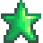

Special Items & Powers
The Special Items & Powers tab of the in-game menu displays the special items, book powers, and mastery powers the Player has collected.
Special Items
Special items typically involve a quest line which rewards the Player with an item yielding special power or access.
| Image | Name | Use | Obtained |
|---|---|---|---|
| Forest Magic | Unlocks the ability to read the language of the Junimos. | Reward from the "Meet The Wizard" Quest, unlocked the morning after the player examines the first golden scroll in the Community Center. | |
| Dwarvish Translation Guide | Unlocks the ability to speak to the Dwarf in the Mines and the dwarf in the Volcano Dungeon. | Reward from the Museum after donating all 4 dwarf scrolls. | |
| Rusty Key | Used to enter the Sewers. | Received from Gunther the day after donating 60 items to the Museum. | |
| Club Card | Used to enter the Casino. | Completing the "The Mysterious Qi" Quest. | |
| Special Charm | Permanently increases daily luck. | From the driver in the truck outside JojaMart (or the Movie Theater if The Missing Bundle is completed) after finding Secret Note #20 and giving him a Rabbit's Foot. | |
| Skull Key | Unlocks the door to the Skull Cavern and unlocks the Junimo Kart machine in the Stardrop Saloon. | From the chest on floor 120 of the Mines. | |
| Magnifying Glass | Unlocks the ability to find Secret Notes. | After completing the "A Winter Mystery" Quest. | |
| Dark Talisman | Quest item | From the chest in the Mutant Bug Lair. | |
| Magic Ink | Quest item | Found on a table in the Witch's Hut. | |
| Bear's Knowledge | Increases sell price of Blackberries and Salmonberries by 3x. | Bringing Maple Syrup into the Secret Woods after finding Secret Note #23. | |
| Spring Onion Mastery | Increases sell price of Spring Onions by 5x. | After triggering Vincent and Jas' 8 heart event. | |
| Key To The Town | Allows access to all buildings in town, at any time of day (with some restrictions). | Bought from Qi's Walnut Room for |
Book Powers
Each of these powers is obtained after reading a specific book for the first time. The books are obtained in a variety of ways.
The Bookseller who visits the town twice every month sells many of them, but most of them are only available starting in Year 3 and only have a ≈9% chance to appear.
| Image | Name | Description | Location |
|---|---|---|---|
| Price Catalogue | You can now see the value of your items. |
| |
| Mapping Cave Systems | You get a 50% discount on Marlon's item retrieval service. |
| |
| Way Of The Wind pt. 1 | You run a little bit faster. |
| |
| Way Of The Wind pt. 2 | You run a little bit faster. |
| |
| Monster Compendium | Monsters have a small chance to drop double loot. |
| |
| Friendship 101 | You become friends with people a little faster. |
| |
| Jack Be Nimble, Jack Be Thick | Gain +1 Defense. |
| |
| Woody's Secret | Felled trees have a 5% chance to yield double the wood. |
| |
| Raccoon Journal | Weeds have a greater chance to yield mixed seeds. |
| |
| Jewels Of The Sea | Fishing treasure chests have a chance to yield roe. |
| |
| Dwarvish Safety Manual | Bombs deal 25% less damage to you. |
| |
| The Art O' Crabbing | Crab pots have a 25% chance to yield double. |
| |
| The Alleyway Buffet | You have a greater chance to find items in the trash. |
| |
| The Diamond Hunter | All stones have a chance to drop a diamond when mined by hand. |
| |
| Book of Mysteries | You have a slightly greater chance to find Mystery Boxes. |
| |
| Horse: The Book | You gain a little extra speed when riding a horse. |
| |
| Treasure Appraisal Guide | You will fetch a better price when selling artifacts. |
| |
| Ol' Slitherlegs | You will now run a lot faster through grass and crops. |
| |
| Animal Catalogue | You can access Marnie's shop when she's not around. |
|
Mastery Powers
Five additional powers can be obtained by visiting the Mastery Cave after reaching level 10 in all five skills. Each mastery requires an additional level for which increasingly more experience is required.
| Image | Name | Description |
|---|---|---|
 |
Farming Mastery | You can now find Golden Animal Crackers, which permanently doubles a farm animal's produce. Doesn't work on pigs. |
| Mining Mastery | Gem-bearing rocks now grant twice the gems. | |
| Foraging Mastery | You can now find Golden Mystery Boxes, which contain superior items. | |
| Fishing Mastery | You can now encounter Golden Fishing Treasure Chests. | |
| Combat Mastery | Unlocks a new equipment slot for trinkets. Trinkets can be found while adventuring and grant special powers. |
History
- 1.1: Added Magic Ink and Dark Talisman.
- 1.3.27: Added Magnifying Glass, Special Charm, Bear's Knowledge, and Spring Onion Mastery.
- 1.5: Added Key To The Town.
- 1.6: Wallet removed from Skills Tab and functionality replaced by Special Items & Powers Tab. Added new icons and metrics to Skills Tab where Wallet items used to be.